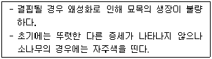
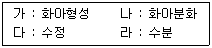
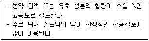
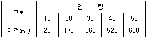
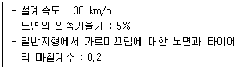

산림산업기사 (2019-08-04 기출문제)
1과목: 조림학
1. 가지치기의 효과로 옳지 않은 것은?
- 무절재를 생산할 수 있다.
- 하목의 수광량을 증가시킨다.
- 산불이 있을 때 수관화를 경감시킨다.
- 연륜폭을 조절해서 수간의 완만도를 낮춘다.
(정답률: 78%)

2. 모수작업법에 대한 설명으로 옳지 않은 것은?
- 벌채가 집중되므로 경비가 절약된다.
- 토양침식과 유실이 발생할 가능성이 낮다.
- 작업의 용이성으로 보아서는 개벌작업과 상당히 유사하다.
- 모수는 종자의 결실량이 많고 비산능력이 좋은 수종을 선택한다.
(정답률: 65%)
3. 풀베기 방법으로 모두베기에 대한 설명으로 옳은 것은?
- 한풍해가 예상되는 곳에서 실시한다.
- 조림목이 양수 수종인 경우에 적용한다.
- 조림목에 광선을 제대로 주지 못하는 단점이 있다.
- 조림목이 심어진 줄에 따라 모든 잡초목을 제거하는 방법이다.
(정답률: 81%)
4. 동일한 수목의 양엽과 음엽을 비교한 설명으로 옳지 않은 것은?
- 양엽은 음엽보다 광포화점이 높다.
- 음엽은 양엽보다 잎의 두께가 두껍다.
- 음엽은 양엽보다 엽록소 함량이 더 많다.
- 양엽은 음엽보다 책상조직이 빽빽하게 배열되어 있다.
(정답률: 80%)
5. 대상 산벌갱신에 대한 설명으로 옳지 않은 것은?
- 일반적으로 양수 수종 갱신에 유리하다.
- 대상지의 폭은 수고의 2~3배 정도이다.
- 벌채는 주풍방향과 반대방향으로 진행하는 것이 유리하다.
- 풍해를 예방하기 위한 방법으로 상방하종 및 측방하종도 가능하다.
(정답률: 64%)
6. 묘목의 가식에 대한 설명으로 옳지 않은 것은?
- 1~2개월 장기간 가식을 할 경우에는 관수가 필요하다.
- 가급적 비가 오거나 비가 온 후 바로 가식하여 묘목이 건조하기 않게 한다.
- 묘목을 심기 전 일시적으로 땅에 뿌리를 묻어 건조하지 않도록 해 주는 작업이다.
- 추위나 바람의 피해가 우려되는 곳은 묘목의 정단 부분을 바람과 반대방향으로 되도록 눕혀 묻어준다.
(정답률: 82%)
7. 종자의 결실 주기가 2~3년인 수종은?
- Salix koreensis
- Picea jezoensis
- Larix kaempferi
- Quercus acutissima
(정답률: 50%)
8. 다음 설명에 해당하는 원소는?

- P
- N
- K
- Mg
(정답률: 66%)
9. 온대남부의 조림수종으로 상록성인 참나무류만 올바르게 나열한 것은?
- 개가시나무, 먼나무
- 개가시나무, 황칠나무
- 붉가시나무, 종가시나무
- 붉가시나무, 홍가시나무
(정답률: 73%)
10. 토양수 중 식물이 쉽게 이용할 수 있는 pF 1.8 ~ 4.2 에 상당하는 유효수분은?
- 화합수
- 흡습수
- 모관수
- 중력수
(정답률: 80%)
11. 1-2-1묘는 몇 번 판갈이 작업한 묘인가?
- 1번
- 2번
- 3번
- 4번
(정답률: 75%)
12. 편백과 화백에 대한 설명으로 옳지 않은 것은?
- 편백과 화백은 측백나무과이다.
- 편백과 화백은 모두 암수딴그루이다.
- 편백은 잎 끝이 예리하고 화백의 잎은 비늘모양이다.
- 편백은 잎의 뒷면이 백색기공선이 Y자형이고 화백은 V 또는 W 자형이다.
(정답률: 67%)
13. 수목의 개화생리 순서로 옳은 것은?

- 가 – 나 – 라 - 다
- 가 – 나 – 다 - 라
- 나 – 가 – 다 - 라
- 나 – 라 – 가 – 다
(정답률: 80%)
14. 교림에 대한 설명으로 옳은 것은?
- 맹아에 의하여 갱신된 산림
- 순수한 원시림으로 유지된 산림
- 숲가꾸기가 적기에 실시된 산림
- 주로 실생묘로 성립된 키 큰 산림
(정답률: 82%)
15. 종자의 순량을 기준이 가장 낮은 수종은?
- 잣나무
- 밤나무
- 오리나무
- 은행나무
(정답률: 63%)
16. 묘목의 단근 작업에 대한 설명으로 옳지 않은 것은?
- 묘목의 철늦은 자람을 억제한다.
- 측근과 세근의 발달을 촉진시킨다.
- 묘목을 포지에 세워두고 도구를 이용해서 절단한다.
- 단근 작업을 통해서 건전한 묘목을 생산할 수는 있어도 산지에 식재하는 경우에는 활착률은 떨어진다.
(정답률: 75%)
17. 산림 갱신을 위한 작업종에 해당되지 않는 것은?
- 간벌
- 개벌
- 산벌
- 획벌
(정답률: 49%)
18. 비료복의 정의, 식재 및 관리에 대한 설명으로 옳지 않은 것은?
- 비료목을 식재한 지역에는 시비하지 않는다.
- 임지 비배효과 증대를 위해 비료목을 혼합 식재한다.
- 임목의 건전한 생산성을 위해 심는 보조적 임목을 말한다.
- 척박한 임지에 주임목의 생장촉진을 위해 비료목을 혼합 식재한다.
(정답률: 81%)
19. 종자를 채집하여 11월말까지는 노천매장을 해야 좋은 수종은?
- 전나무
- 단풍나무
- 층층나무
- 느티나무
(정답률: 58%)
20. 숲의 교란과 복원에 대한 설명으로 옳지 않은 것은?
- 산불, 산사태, 병충해 등으로 숲이 교란된다.
- 교란은 생태계의 구조와 기능에 심각한 영향을 끼친다.
- 훼손된 생태계는 복원되기란 매우 어렵고 시간이 많이 걸린다.
- 훼손은 발생빈도, 공간규모, 훼손강도가 일정한 패턴을 보인다.
(정답률: 88%)
2과목: 산림보호학
21. 곤충의 내외부 형태에 대한 설명으로 옳지 않은 것은?
- 표피는 외표피와 원표피로 구분된다.
- 입틀은 윗입술, 큰턱, 작은턱, 아랫입술, 혀 등으로 구성된다.
- 기체의 통로는 기문으로 하며 가슴에 2쌍, 배에 8쌍, 모두 10쌍이 일반적이다.
- 가슴은 앞가슴, 가운데가슴, 뒷가슴이 있고, 앞가슴과 가운데가슴에는 보통 1쌍의 날개가 있다.
(정답률: 65%)
22. 천공성 해충에 속하지 않는 것은?
- 박쥐나방
- 밤나무혹벌
- 알락하늘소
- 광릉긴나무좀
(정답률: 60%)
23. 다음 설명에 해당하는 농약살포 방법은?

- 살분법
- 살립법
- 미량 살포
- 대량 살포
(정답률: 70%)
24. 소나무좀이 월동하는 충태는?
- 알
- 성충
- 유충
- 번데기
(정답률: 61%)
25. 향나무 녹병의 중간기주가 아닌 것은?
- 잎갈나무
- 모과나무
- 팥배나무
- 윤노리나무
(정답률: 60%)
26. 솔잎혹파리 방제를 위하여 나무주사를 실시할 때 가장 효과적인 시기는?
- 3~4월
- 5~6월
- 7~8월
- 9~10월
(정답률: 66%)
27. 후약층으로 11월부터 이듬해 3월까지 수목에 피해를 주는 해충은?
- 솔나방
- 소나무좀
- 솔잎혹파리
- 솔껍질깍지벌레
(정답률: 60%)
28. 다음 중 나무좀·하늘소·바구미 등의 해충 방제에 가장 적합한 방법은?
- 포살법
- 등화 유살법
- 번식장소 유살법
- 잠복장소 유살법
(정답률: 53%)
29. 대기오염에 의한 산림의 피해를 최소화시킬 수 있는 방안으로 거리가 먼 것은?
- 방음벽 시설 설치
- 공해 배출의 법적 규제
- 공해 저항성 수종의 식재
- 임지비배를 통한 산림관리
(정답률: 83%)
30. 내화력이 가장 강한 수종은?
- 편백
- 소나무
- 삼나무
- 가문비나무
(정답률: 66%)
31. 포플러 모자이크병을 일으키는 병원체는?
- 세균
- 진균
- 바이러스
- 파이토플라스마
(정답률: 72%)
32. 해충의 개체군 동태를 알기 위해 주로 사용하는 것으로 충태별 사망수, 사망요인, 사망률 등의 항목으로 구성된 표는?
- 생명표
- 생태표
- 생식표
- 수명표
(정답률: 71%)
33. 소나무재선충병의 매개충은?
- 소나무좀
- 솔잎혹파리
- 솔수염하늘소
- 솔껍질깍지벌레
(정답률: 83%)
34. 균사에 격벽이 없는 균류는?
- 난균류
- 담자균류
- 자낭균류
- 불완전균류
(정답률: 65%)
35. 침엽수 묘목의 모잘록병을 방제하는데 가장 알맞은 방법은?
- 중간 기주를 제거한다.
- 살균제로 토양소독과 종자소독을 한다.
- 살충제를 뿌려서 매개 곤충을 구제한다.
- 질소질비료를 충분히 주어 묘목을 튼튼하게 한다.
(정답률: 75%)
36. 해충의 생물학적 방제 방법으로 사용되는 천적이 아닌 것은?
- 먹좀벌류
- 방패벌레류
- 무당벌레류
- 풀잠자리류
(정답률: 67%)
37. 뿌리혹병 방제 방법으로 옳지 않은 것은?
- 병이 없는 건전한 묘목을 식재한다.
- 접목할대 쓰이는 도구는 소독하여 사용한다.
- 재식할 묘목은 스트렙토마이신 용약에 침지하는 것이 좋다.
- 심하게 발생한 지역에서는 내병성 수종인 포플러류를 식재한다.
(정답률: 75%)
38. 봄에 수목 생장 개시 후에 내리는 서리에 의해 발생하는 수목 피해는?
- 만상
- 동상
- 한상
- 조상
(정답률: 79%)
39. 잣나무 털녹병 방제 방법으로 옳지 않은 것은?
- 중간기주를 제거한다.
- 내병성 품종을 심는다.
- 토양 소독을 철저히 한다.
- 병든 나무는 지속적으로 제거한다.
(정답률: 71%)
40. 담배장님노린재를 구제하여 방제가 가능한 수목병은?
- 소나무 잎녹병
- 잣나무 털녹병
- 대추나무 빗자루병
- 오동나무 빗자루병
(정답률: 70%)
3과목: 임업경영학
41. 흉고직경 측정 자료가 2cm 괄약으로 정리되었을 경우, 흉고직경 10cm는 어떤 흉고직경의 측정범위에 속하는가?
- 8cm 이상 ~ 10cm 미만
- 9cm 이상 ~ 11cm 미만
- 10cm 이상 ~ 12cm 미만
- 9.5cm 이상 ~ 11.5cm 미만
(정답률: 69%)
42. 임업의 경제적 특성에 대한 설명으로 옳지 않은 것은?
- 임업생산은 조방적이다.
- 생산기간이 대단히 길다.
- 공익성이 커서 제한성이 많다.
- 육성임업과 채취임업이 병존한다.
(정답률: 56%)
43. 흉고형수에 영향을 미치는 인자가 아닌 것은?
- 수고
- 지위
- 수종
- 근원직경
(정답률: 58%)
44. 법정림 개념을 적용하기에 가장 적합한 작업방법은?
- 개벌작업
- 택벌작업
- 산벌작업
- 중림작업
(정답률: 49%)
45. 산림조사 항목으로 지황 조사항목이 아닌 것은?
- 지세
- 지위
- 지리
- 임종
(정답률: 70%)
46. 산림경영계획에서 소반구획의 최소 면적은?
- 0.1 ha
- 1 ha
- 10 ha
- 100 ha
(정답률: 64%)
47. 고정자산에 대한 설명으로 옳은 것은?
- 처분을 목적으로 소유하는 자산
- 물리적으로 이동이 불가능한 자산
- 시간에 따른 가치의 변화가 없는 자산
- 자산이 가지고 있는 생산능력을 이용하기 위해 소유하는 자산
(정답률: 60%)
48. 임업이율의 성격으로 옳지 않은 것은?
- 임업이율은 대부이자이다.
- 임업이율은 장기이율이다.
- 임업이율은 명목적 이율이다.
- 임업이율의 계산은 복리를 적용한다.
(정답률: 67%)
49. 임업경영의 성과분석에서 계산되는 다음의 항목 중에서 가장 큰 값은?
- 임가소득
- 임업소득
- 기타소득
- 임업순수익
(정답률: 66%)
50. 임목 생산에 들어간 각종 비용의 원리금 합계에서 육림기간 중에 얻은 간벌수입이나 기타 임산물 수입의 원리금 합계를 공제한 나머지를 가리키는 것은?
- 육림비
- 수익가
- 차액지대
- 임목원가
(정답률: 56%)
51. 임분의 재적을 추정할 때 전 임목을 몇 개의 계급으로 나누어 각 계급의 본수를 동일하게 한 다음 각 계급에서 같은 수의 표준목을 선정하는 방법은?
- 단급법
- Urich법
- Hatrig법
- Draudt법
(정답률: 77%)
52. 임지생산능력을 판단하는 항목으로 옳지 않은 것은?
- 법정축적에 의한 방법
- 환경인자에 의한 방법
- 지위지수에 의한 방법
- 지표식물에 의한 방법
(정답률: 52%)
53. 임업 경영의 지도원칙 중 보속성의 원칙에 대한 설명으로 옳은 것은?
- 국민의 복리 증진을 목표로 하는 원칙
- 최소의 비용으로 최대의 효과를 발휘하게 하는 원칙
- 해마다 목재 수확을 양적 및 질적으로 계속적으로 균등하게 하는 원칙
- 생산량을 투입한 생산 요소의 수량으로 나눈 값이 최고가 되도록 하는 원칙
(정답률: 79%)
54. 벌기 4년마다 순수익 R을 영속적으로 얻을 수 있는 임지가 있다. 연이율이 p%일 경우 이 임지에서 발생하는 수익의 전가합계식은?
- R ÷ p4
- R ÷ (1 + p)4
- R ÷ (p4 - 1)
- R ÷ ((1 + p)4 - 1)
(정답률: 51%)
55. 어떤 산림의 벌체권 취득원가가 5천만원이고 잔존가치는 없으며 벌채추정량이 1백만m3 이고 당기벌채량이 1천m3 이라면 총감가상각비는? (단, 생산량 비례법 이용)
- 500원
- 5,000원
- 50,000원
- 500,000원
(정답률: 70%)
56. 아래와 같은 수확표가 주어질 때 벌기수확에 의한 법정축적은? (단, 산림면적은 100ha, 윤벌기는 50년)

- 27,800 m3
- 31,250 m3
- 31,500 m3
- 32,250 m3
(정답률: 56%)
57. 말구직경 24cm, 중앙직경 28cm, 원구직경 34cm, 재장이 4m 인 통나무를 Newton식(또는 Riecke식)으로 계산한 재적은?
- 약 0.246 m3
- 약 0.255 m3
- 약 0.272 m3
- 약 0.295 m3
(정답률: 48%)
58. 어떤 재화로부터 장차 얻을 수 있을 것으로 기대되는 수익을 일정한 이율로 할인하여 구한 현재가를 무엇이라 하는가?
- 기망가
- 매매가
- 비용가
- 자본가
(정답률: 76%)
59. 농지의 주변이나 농지와 산지의 경계선 등에 유실수나 특용수 또는 속성수 등을 식재하여 임업수입의 조기화를 돔하는 형태의 임업경영은?
- 혼농임업
- 혼목임업
- 농지임업
- 비임지임업
(정답률: 72%)
60. 음(-)의 값이 나올 수 있는 투자효율 분석법은?
- 회수기간법
- 투자이익률법
- 순현재가치법
- 수익비용률법
(정답률: 63%)
4과목: 산림공학
61. 시멘트에 대한 설명으로 옳지 않은 것은?
- 풍화된 시멘트는 강도가 저하된다.
- 시멘트의 강도는 경화의 강도로 표시한다.
- 시멘트입자 1g에 대한 표면적(cm2)을 분말도라 한다.
- 시멘트의 분말도는 높을수록 콘크리트의 초기 강도가 크다.
(정답률: 53%)
62. 산악지대에서 임도의 노선 선정 방법으로 옳지 않은 것은?
- 계곡임도는 임지의 상부에서부터 개발되며 임지개발의 중추적 역할을 한다.
- 산정부 개발임도는 산정부의 안부에서부터 시작되는 순환식 노선방식을 주로 사용한다.
- 능선임도는 산악지대 임도배치 중 건설비가 가장 적게 소요되며 계곡 및 늪지대에서 임도 개설 시 용이하다.
- 사면임도는 계곡임도로부터 시작하며 지그재그방식이 적당하지만 완경사지에서는 대각선 방식도 사용된다.
(정답률: 51%)
63. 주로 사면 기울기가 1 : 1보다 완만한 곳에 흙이 털어지지 앟은 온떼를 사용하며 전면녹화를 목적으로 시공하는 산지사방 녹화공법은?
- 띠떼심기
- 줄떼다지기
- 선떼붙이기
- 평떼붙이기
(정답률: 70%)
64. 다음 조건에서 임도 설계 시 적용하는 곡선 반지름으로 가장 적합한 것은?

- 약 30m
- 약 45m
- 약 60m
- 약 75m
(정답률: 54%)
65. 배향곡선지가 아닌 경우 길어깨와 옆도랑의 너비를 제외한 임도의 유효너비 기준은?
- 2m
- 3m
- 4m
- 6m
(정답률: 72%)
66. 사방댐 설치 목적으로 가장 거리가 먼 것은?
- 물 이용
- 산각 고정
- 식생 복구
- 토석류 피해 적지
(정답률: 67%)
67. 비탈면 녹화에 사용하는 사방용 초본류 중 재래종이 아닌 것은?
- 김의털
- 제비쑥
- 오리새
- 까치수영
(정답률: 68%)
68. 비유량이 20m3/s/km2 이고 유역면적이 15km2 일 때 최대홍수유량은?
- 133 m3/s
- 300 m3/s
- 450 m3/s
- 750 m3/s
(정답률: 74%)
69. 임도에서 대피소 설치 간격 기준은?
- 300m 이내
- 400m 이내
- 500m 이내
- 600m 이내
(정답률: 77%)
70. 산지 황폐의 진행상태가 초기 단계부터 순차적으로 올바르게 나열된 것은?
- 초기황폐지 – 임간나지 – 민둥산 – 척암임지 - 황폐이행지
- 초기황폐지 – 임간나지 – 민둥산 – 황폐이행지 - 척암임지
- 임간나지 – 척악임지 – 초기황폐지 – 황폐이행지 - 민둥산
- 척악임지 – 임간나지 – 초기황폐지 – 황폐이행지 – 민둥산
(정답률: 67%)
71. 와이어로프 표기방법으로 “6×7 C/L 20mm B종”에서 B종이 의미하는 것은?
- 스트랜드의 본수
- 와이어 로프의 지름
- 와이어 로프의 인장강도
- 와이어 로프의 표면처리 상태
(정답률: 65%)
72. 트랙터에 의한 집재 방법이 아닌 것은?
- 팬
- 설키
- 지면끌기
- 인클라인
(정답률: 54%)
73. 고저측량에서 전시와 후시를 함께 읽은 점으로 오차발생 시 측량결과에 중요한 영향을 주는 것은?
- 중간점
- 기계고
- 미지점
- 이기점
(정답률: 61%)
74. 거리 측정에 사용하는 장비는?
- 풀
- 레벨
- 트랜싯
- 컴퍼스
(정답률: 59%)
75. 벌목 작업 시 수구를 만드는 방향은?
- 계곡 쪽
- 임도가 있는 쪽
- 작업자가 있는 쪽
- 벌도목이 넘어지는 쪽
(정답률: 77%)
76. 산지사방에서 비탈다듬기에 대한 설명으로 옳지 않은 것은?
- 수정기울기는 대체로 최대 35° 전후로 한다.
- 산 아래부터 시작하여 산꼭대기로 진행한다.
- 붕괴면 주변의 상부는 충분히 끊어내도록 설계한다.
- 퇴적층의 두께가 3m 이상일 때에는 땅속 흙막이 공작물을 설계한다.
(정답률: 72%)
77. 양각기계획법으로 1 : 25000 지형도상에서 종단기울기가 5%인 노선을 배치할 때 양각기 조정 폭은?(오류 신고가 접수된 문제입니다. 반드시 정답과 해설을 확인하시기 바랍니다.)
- 0.2cm
- 0.4cm
- 0.6cm
- 0.8cm
(정답률: 25%)
78. 임도개설 작업 시 측면 절토 또는 흙을 밀어날 때 가장 적합한 장비는?
- 로드 롤러
- 토우인 윈치
- 앵글 도우저
- 모터 그레이더
(정답률: 64%)
79. 비탈 돌쌓기 시공요령으로 옳지 않은 것은?
- 귀돌이나 갓돌은 규격에 맞는 것으로 한다.
- 돌쌓기의 세로줄눈은 파선줄눈을 피하여 쌓는다.
- 높은 돌쌓기는 아래로 내려오면서 돌쌓기의 뒷길이를 길게 한다.
- 기초를 깊이 파고 단단히 다져야 하며 큰 돌부터 먼저 놓아가면서 차례로 쌓아올린다.
(정답률: 71%)
80. 임도 설계서 작성 순서로 옳은 것은?
- 시방서 – 설계설명서 – 예산내역서 – 수량산출서 - 예정공정표
- 시방서 – 수량산출서 – 예산내역서 – 설계설명서 - 예정공정표
- 설계설명서 – 시방서 – 예정공정표 – 예산내역서 - 수량산출서
- 설계설명서 – 시방서 – 예정공정표 – 수량산출서 – 예산내역서
(정답률: 50%)